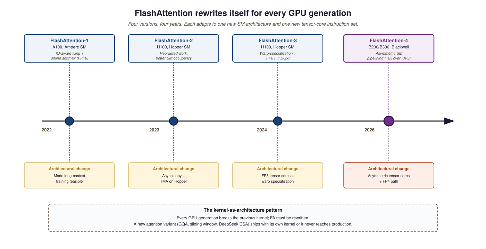
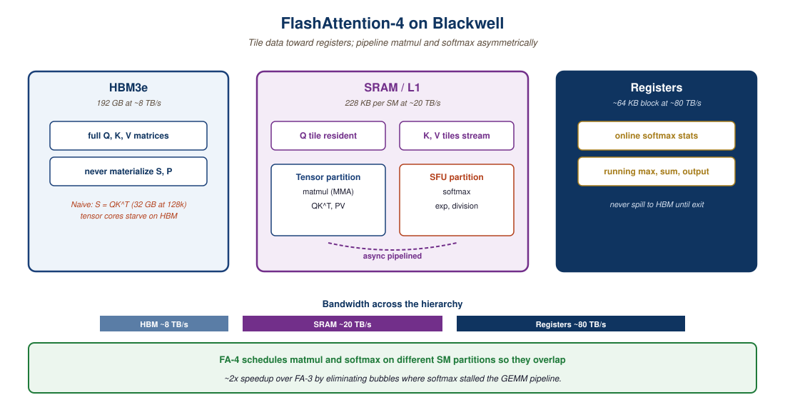

"FlashAttention is the kernel that taught a generation of researchers to read CUDA. FlashAttention-4 is the kernel that taught them to read Blackwell."
Tensor, Kernel-Whisperer AI Agent
- Trace the four FlashAttention versions to the NVIDIA SM generations they target (A100, H100, H100+FP8, Blackwell).
- Explain what "asymmetric pipelining" means in the FA-4 paper and why it is specific to Blackwell SMs.
- Distinguish FA-4 (kernel, fused attention) from vLLM PagedAttention (KV cache scheduler) and TensorRT-LLM (serving stack).
- Predict when a novel attention variant (CSA, GQA, sliding-window) becomes deployable based on kernel-support timelines.
The kernel layer used to be invisible to architecture researchers. By 2026 it sets the speed of architectural progress: a new attention variant cannot ship at frontier scale until someone writes a fast kernel for it. FA-4 is the canonical example of this co-evolution, and its Blackwell-specific design choices reveal why every NVIDIA generation rewrites the attention kernel from scratch.
Prerequisites
This section assumes the attention mechanics from Section 4.2, the FlashAttention-1 and -2 background from Section 9.5, and basic CUDA familiarity.
Every generation of NVIDIA hardware (Ampere, Hopper, Blackwell) breaks the previous generation's attention kernels, because the streaming multiprocessor (SM) architecture changes and the tensor-core instructions get new shapes. The FlashAttention line of work (Dao et al., 2022 onwards) is the canonical adaptation: each generation produces a new IO-aware exact-attention kernel that fuses the softmax into the tensor-core pipeline and stays close to roofline performance. FlashAttention-4 (Dao et al., March 2026) is the Blackwell-generation entry.
What makes FA-4 different from its predecessors is that Blackwell's SMs are asymmetric: tensor cores and special function units run at different effective throughputs, and the optimal kernel must pipeline the two paths separately. The Modal blog's reverse-engineering writeup and the Together AI deep-dive remain the clearest explainers; the paper is dense.
58.4.1 Why each GPU generation rewrites the kernel
Tri Dao published FlashAttention in 2022 as a graduate student, and within a year every major training stack quietly switched to it. The trick is that the math of attention is unchanged, the order of memory accesses is different, and the GPU stops choking on its own HBM bandwidth. NVIDIA shipped Blackwell B200 in 2024 with hardware features that essentially required a FlashAttention rewrite, which is how we got FA-4 in 2026. The recurring joke in the kernel-writing community is that FlashAttention is now a yearly subscription, paid in PhD theses.
FlashAttention-1 (2022) targeted A100. FA-2 (2023) targeted H100 Hopper. FA-3 (2024) targeted H100 with FP8 and warp-specialization. FA-4 (2026) targets Blackwell B200/B300 and the new asymmetric tensor cores that mix MMA throughputs across SM partitions. The headline number is roughly 2x faster than FA-3 on the same workload, with new support for variable-length attention masks (essential for variable-length packed-sequence training) and group-query attention pipelining.

58.4.2 Algorithm and kernel pipelining co-design
The FA-4 paper's central technical move is to design the algorithm and the kernel together. Previous FlashAttention papers held the algorithm fixed (tile, softmax-online, IO-aware) and varied the kernel for new hardware. FA-4 changes both: the algorithm now schedules the softmax and the GEMM on separate SM partitions, with explicit "asymmetric pipelining" of the two paths. This is the kind of optimization that requires hand-written CUDA / PTX; NVIDIA's Blackwell architecture documentation is the reference for the underlying instructions.

58.4.3 The wider inference-kernel ecosystem
FA-4 is the highest-profile but not the only kernel that matters in 2026. The broader stack:
- vLLM PagedAttention: the KV cache management layer that turns "I have one batch of one request" into "I have a queue of hundreds and serve them at high throughput".
- TensorRT-LLM: NVIDIA's serving stack; integrates FA-4 and Blackwell-specific FP4 quantization paths.
- torchao: the PyTorch-native quantization library; integrates with FA-4 for low-bit inference.
- bitnet.cpp: the 1.58-bit inference framework; lets ternary-weight models run on x86 and ARM CPUs at speeds competitive with GPU fp16.
- Triton: the kernel-authoring language. Most non-NVIDIA kernels for AMD MI355X and Intel Gaudi are written in Triton, not CUDA, because portable.
58.4.4 Comparing the inference-kernel paths
| Kernel / framework | Hardware | Speedup over baseline | Best for |
|---|---|---|---|
| FlashAttention-4 | Blackwell B200/B300 | ~2x over FA-3 | Frontier training and prefill |
| FlashAttention-3 | Hopper H100 | ~1.5-2x over FA-2 with FP8 | H100 deployments |
| vLLM PagedAttention | Any | ~5-10x throughput | Production serving |
| TensorRT-LLM | NVIDIA only | ~1.5-3x over vLLM | NVIDIA-locked production |
| bitnet.cpp | x86 / ARM CPUs | 2.4-6.2x x86, 1.4-5x ARM CPU | CPU-only LLM serving |
The FA line of work has one recurring theme: the algorithm performance is set by where you can keep the tile, not by how fast the multiplier runs. Blackwell HBM3e is ~8 TB/s; SRAM/L1 is ~20 TB/s; registers are ~80 TB/s. Tiling so the working set lives in SRAM, with online softmax keeping running statistics in registers, is the whole game. FA-4 added one more step: schedule the tensor-core partition and the special-function partition asymmetrically so neither stalls. The mental model: attention is a streaming problem with a memory budget, not a FLOP-counting problem with an arithmetic budget. Once you internalize that, every kernel innovation in the FA-1 to FA-4 line looks like the same idea applied to a new memory wall. The January 2026 LLM Inference Hardware survey formalises the trend.
When DeepSeek V4 shipped (Q1 2026) with Compressed Sparse Attention (CSA), the open-weight community immediately discovered that vLLM, TensorRT-LLM, and SGLang did not have CSA kernels. For roughly 4-6 weeks "the weights are public" coexisted with "the inference is 3-5x slower than dense baselines" because nobody had written a fused CSA kernel. The vLLM team shipped a first CSA implementation in early Q2 2026; TensorRT-LLM followed in late Q2. This pattern is the new normal: every novel attention variant ships with a custom kernel, and your effective throughput depends on whether your serving stack has caught up. Always check kernel support before committing to deploying a novel architecture.
FA-4's "asymmetric pipelining" optimization assumes Blackwell's tensor-core and special-function-unit ratios; it does not produce speedups on Hopper (H100/H200) and may regress on Ampere (A100). The compile-time guard in the official kernel rejects pre-Blackwell architectures. If you maintain a mixed-fleet cluster (some H100, some B200), you need both FA-3 and FA-4 in your build, with runtime dispatch by GPU arch. Triton-based forks (for AMD MI355X, Intel Gaudi) implement the FA algorithm but not the FA-4-specific kernel; they typically land at 60-70% of CUDA FA-4 throughput on equivalent hardware. The non-portability of frontier kernels is one of the costs of NVIDIA's tooling lead.
When DeepSeek V4 shipped with Compressed Sparse Attention, vLLM and TensorRT-LLM did not support CSA out of the box. The result was a multi-week lag between "weights are public" and "production inference is fast". This is the new normal: every novel attention variant ships with a custom kernel, and if your serving stack does not have it, your effective throughput collapses. Check kernel support before you commit to deploying a new architecture.
58.4.5 What changes for non-NVIDIA silicon
FA-4 is CUDA / PTX-only. The non-NVIDIA equivalents are written in Triton (for AMD MI355X), in custom SDKs (Cerebras WSE, Groq LPU), or in OpenCL / Vulkan (mobile). The bandwidth and instruction asymmetries differ across vendors; the FlashAttention algorithm is portable but the kernel is not. This is one of the unresolved questions of 2027: will Triton converge across vendors as a unified kernel language, or will each silicon ship its own framework? Section 58.5 closes the chapter with the systems-level co-design question this implies.
- FA-4 is the Blackwell-generation entry in the FlashAttention line, ~2x over FA-3 on the same workload, with new variable-length and GQA-pipelined support.
- Its core contribution is asymmetric pipelining: scheduling tensor-core and special-function partitions separately so they overlap rather than stall.
- Kernels gate architectural progress: novel attention variants (CSA, sliding-window) cannot ship at scale until someone writes a fast kernel for them.
- The non-NVIDIA story (Triton on MI355X, custom SDKs on Cerebras/Groq) implements the FA algorithm but not the FA-4-specific kernel; production parity is 60-70%.
Show Answer
Show Answer
What's Next?
In the next section, Section 58.5: Training-Inference Co-Design, we build on the material covered here.